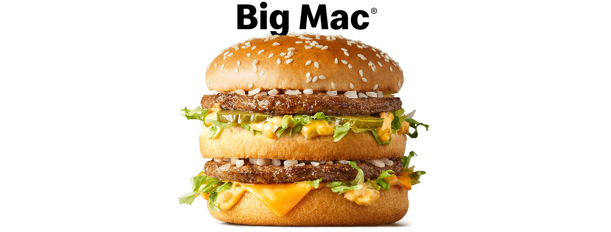

THE BIGMAC
The Big Mac is an iconic and mouthwatering sandwich offered by McDonald's. It is a true classic that has captured the hearts and taste buds of millions around the world. This delectable creation features two juicy all-beef patties, each perfectly seasoned and seared to perfection, nestled between three layers of a soft, sesame seed bun.
Adding to its irresistible appeal, the Big Mac boasts a signature sauce that adds a tangy and creamy kick to every bite. This special sauce, combined with crisp lettuce, tangy pickles, and slices of melty American cheese, creates a harmonious blend of flavors and textures that is simply unforgettable.
Here is the ingredients you will need
- 2x All beef patties
- Special sauce
- Lettuce
- Cheese slices (usually American cheese)
- Pickles
- Onions (diced or dehydrated)
- Sesame seed bun
Here are the steps to make a Big Mac
- Gather all the ingredients.
- Preheat a grill or stovetop skillet to medium-high heat.
- Season the beef patties with salt and pepper on both sides.
- Place the patties on the grill or skillet and cook for about 3-4 minutes per side, or until they reach your desired level of doneness.
- While the patties are cooking, prepare the special sauce by combining mayonnaise, ketchup, mustard, sweet pickle relish, finely chopped onions, and a touch of vinegar in a bowl. Mix well until all the ingredients are evenly incorporated.
- Slice the sesame seed buns in half horizontally and lightly toast them on the grill or in a toaster.
- Assemble the Big Mac: On the bottom bun, spread a generous amount of the special sauce. Layer some shredded lettuce on top of the sauce.
- Place a beef patty on the lettuce and add a slice of cheese on top. Then, add a few slices of pickles and some diced onions.
- Repeat the previous step with the remaining patty, cheese, pickles, and onions.
- Finally, spread another layer of the special sauce on the top bun and place it on top of the assembled ingredients.
- Press the burger gently to bring all the flavors together.
Your homemade Big Mac is now ready to be enjoyed! Serve it with some crispy French fries and your favorite beverage for the ultimate fast food experience.